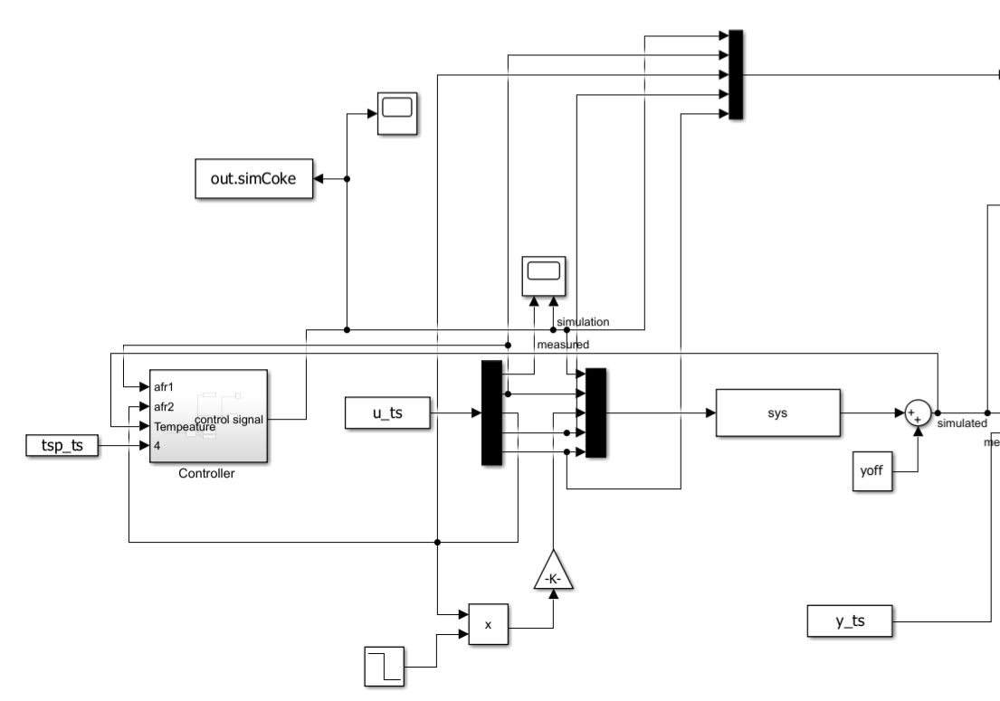
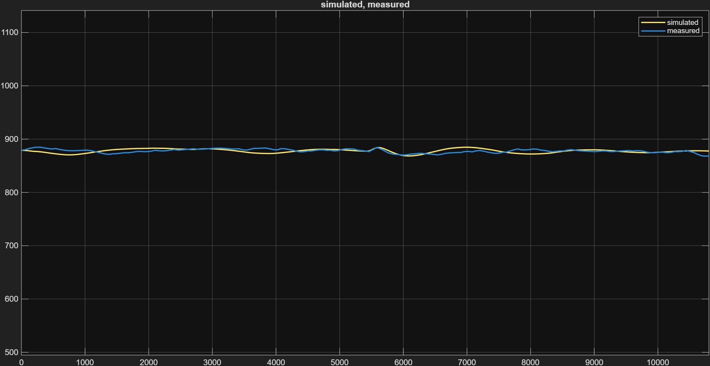
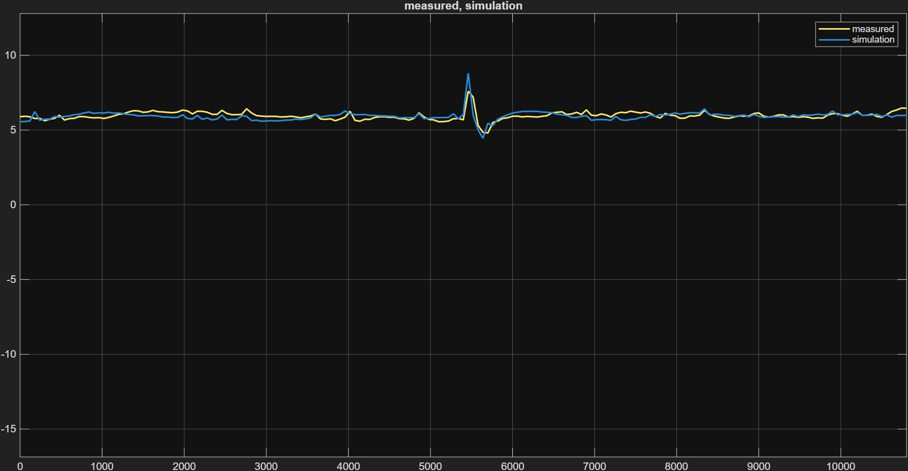
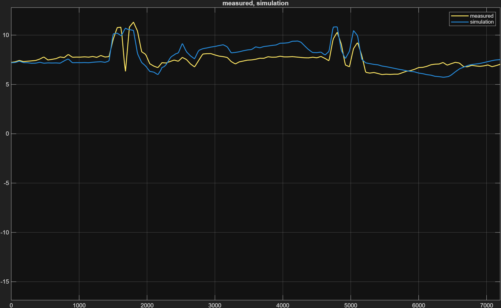
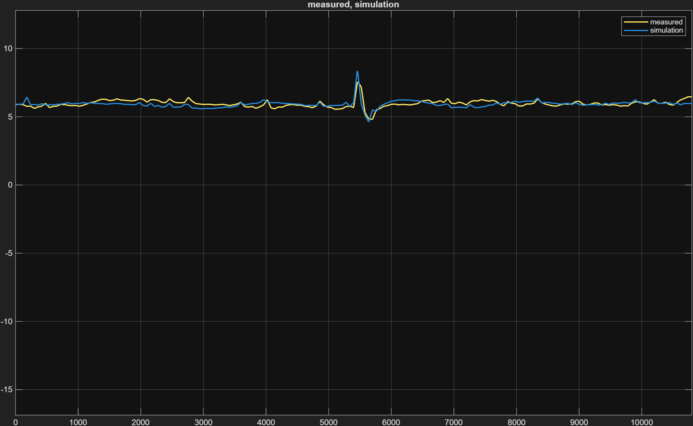

Recreating an Industrial Plant and its PID Loop in Simulink
MATLAB / SimulinkPIDProcess controlState-space models

What I built
As part of my thesis, I recreated a cement plant's precalciner and its temperature control loop in Simulink. The plant model takes the real process inputs, the plant's PID temperature controller and fuel controller are rebuilt around it, and the loop is closed on the simulated temperature, so the simulated controller makes its own decisions.
Checking it against the real plant
To test the recreation, I drove the simulation with recorded plant inputs and compared it with what the plant actually did. The simulated temperature and the coke flow chosen by the simulated controller follow the plant closely.



